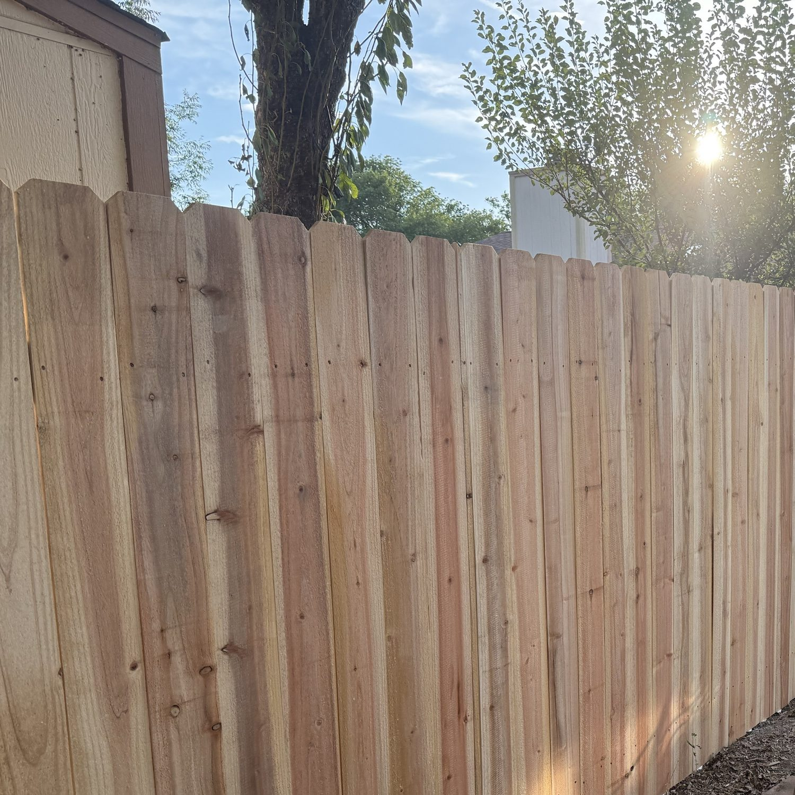
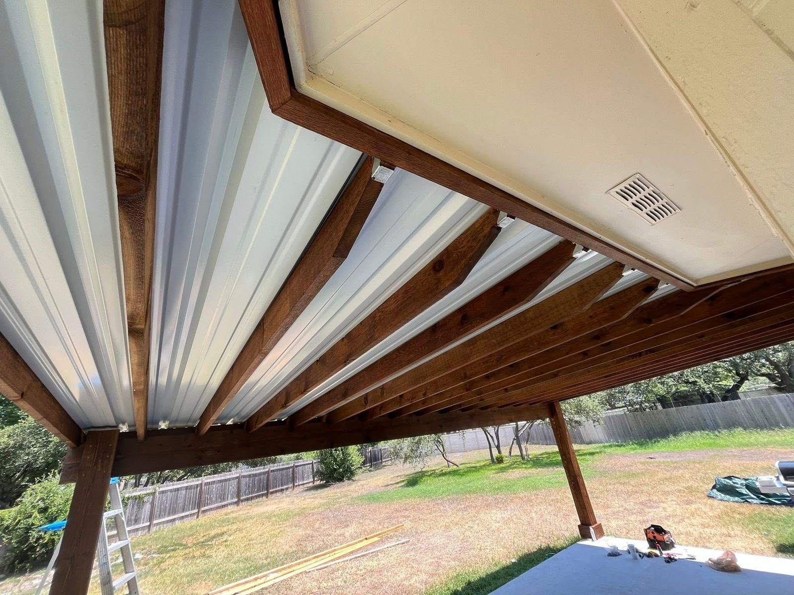

People ask us this every year, usually in July, usually after standing in their backyard for ten minutes and deciding something has to change. The honest answer: fall is the best time to build outdoors in Austin, winter is the most underrated, spring is the busiest, and summer is the hardest. Month by month, here is how Austin weather, crew availability, and hail season shape a deck, fence, or pergola build.
Austin build season at a glance
| Season | Build conditions | Crew availability | Best for |
|---|---|---|---|
| Fall (Oct–Nov) | Best of the year | Fills up fast | Decks, fences, pergolas, staining |
| Winter (Dec–Feb) | Good, minus freeze days | Best of the year | Fences, framing, concrete, roof inspections |
| Spring (Mar–May) | Good early, stormy late | Tightest after hail | Early-spring fences and decks |
| Summer (Jun–Sep) | Hardest on crews and finishes | Moderate | Shade structures, patio covers |
Fall is the best build season in Austin
October and November are as good as it gets here. Highs land in the 70s and low 80s, the humidity finally breaks, and the soil still has enough give to dig without being saturated. That combination matters more than people expect:

- Stain and sealer cure. Wood finishes want a surface temperature roughly between 50 and 90 degrees. In October that is most of the day. In July a south-facing deck board can hit 140 degrees by noon, which flash-dries finish before it penetrates and shortens its life.
- Concrete sets predictably. Footings and slabs poured in mild weather cure at a steady rate, without the rapid moisture loss you fight in summer or the freeze risk of a January cold snap.
- Crews work full days. No lost afternoons. A deck that takes two and a half weeks in August often wraps in under two in October.
- You get the space for the good months. Build in October and your deck is ready for Thanksgiving, the holidays, and the long, beautiful Austin spring.
The catch is everyone else figures this out too. Fall slots are the first to fill, which is why we ask homeowners planning a fall build to reach out in August or September.
Winter deck and fence builds: Austin's underrated window
This is the one that surprises people. Austin is not Minneapolis.
We frame and set posts through most of December, January, and February without much trouble. Average January highs sit in the low 60s.
What winter gets you:
- The shortest lead times of the year. Fewer homeowners are calling, so you get earlier start dates and the crew you want.
- Dormant landscaping. Digging post holes and running equipment through a yard does far less damage in February than in May. Grass and beds recover before you are using the yard again.
- Ready by spring. Finish in February and the space is done before the first warm weekend.
The real constraints are honest ones: we do not pour concrete into a hard freeze, and short daylight means slightly longer calendars on big builds. Both are schedulable. Winter is also the right time for a roof inspection, before spring hail season arrives.
Spring in Austin: good early, then hail season
March and early April are excellent for deck and fence builds, close to fall conditions. Then two things collide: everyone decides at once that they want a backyard, and hail season starts.
Central Texas takes its worst hail between March and May. After a significant storm across Travis, Hays, or Williamson County, roofing demand spikes region-wide and pulls crews and materials in that direction.
If your fence project lands in the week after a hail event, expect the whole market to be slower, not just us. If you want a spring build, aim for a February call and a March start.
Storm hit your place? We do free roof inspections and document everything your insurance adjuster needs. Call or text (512) 587-3914. Read the storm damage guide →
Roof inspection info →Summer: build shade, not decks
We build all summer, and we will build yours if that is when you are ready. But it is the least efficient season for deck and fence work, and here is what changes.

Crews start at first light and lose productive hours by mid-afternoon, so calendars stretch. Finish work has to be timed around surface temperature. And working on an exposed roof in a 100-degree week is dangerous, which is why roof work gets scheduled for early mornings.
Summer's one clear advantage: it is the season you most feel the absence of shade, which makes it the right time to commit to a pergola or patio cover. Decide in July, build in October, and you are covered before the next one.
When to book your Austin deck or fence build
- Want it for this fall? Call now. October and November slots go first.
- Flexible on timing? Book a winter build. Shortest wait, dormant yard, done by spring.
- Planning for spring? Reach out in January or February, before hail season compresses everything.
- Thinking about it in the heat of summer? Start the design in summer for a fall build. The design and HOA approval steps take a few weeks anyway, so that time is not wasted.
One thing that does not change by season: HOA architectural review takes as long as it takes, typically 2 to 6 weeks depending on your neighborhood. We prepare and submit that packet as part of every project, but it is the step most likely to move your start date. Factor it in.
Austin build timing questions
What is the best month to build a deck in Austin?
October and November are the best build months in Austin. Daytime highs sit in the 70s and low 80s, humidity drops, the ground is workable, and stain and sealer cure properly. March and April are the next best window before the heat and the spring storm backlog arrive.
Can you build a fence or deck in Austin during winter?
Yes, and December through February is one of the better windows for deck and fence work in Austin. Austin winters are mild enough to frame and set posts almost every week of the season. The main constraints are the handful of hard-freeze days when concrete should not be poured, and shorter daylight. Crews are less booked, so lead times are the shortest of the year.
Is summer a bad time to build in Austin?
It is the least efficient time, not an impossible one. Crews start at sunrise and lose the back half of the afternoon to heat, so builds take longer. Stain and sealer applied to a 140-degree deck surface can flash-dry and fail early, so finish work gets scheduled around the weather. If your goal is to use the space by summer, build in fall or winter instead.
How far ahead should I book a deck or fence project?
For a fall build, reach out in August or September. For spring, reach out in January or February. Two to six weeks of lead time is typical, but the gap stretches after any hail event, when roofing demand pulls crews across the whole region.
Does the season change what a project costs?
The labor and material line items do not change much by season, but availability does. After a spring hail storm, roofing demand spikes and everything gets tighter and slower across the trades. Booking in the off-season is less about a discount and more about getting the schedule and the crew you want.